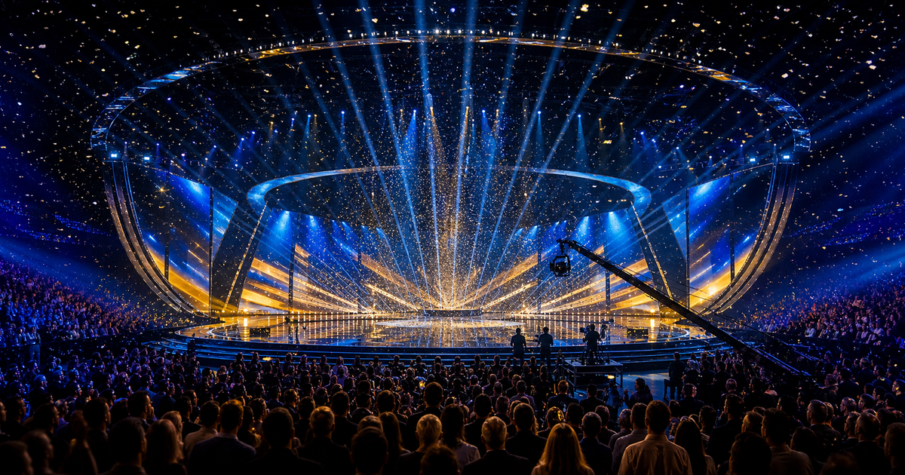

Song Contests · 2027
Eurovision Grand Final 2027
The Eurovision final page now points to the next Saturday-night final, with host details left open until official confirmation.
What changed
Final-night search demand starts months ahead, so the page should collect running order, finalists, voting and winner updates for 2027.
- The active page is now under the category event structure.
- The edition shown here is 2027.
- Countries are rendered as flag, name and link:
 Austria.
Austria.
Event structure
| Part | Focus | Visitor use |
|---|---|---|
| Finalists | Direct finalists and qualifiers | Add countries once the line-up is known. |
| Voting | Jury and public vote | Track official voting rules. |
| Winner | Result | Replace TBC after the final. |
Planning notes
- Check official organisers before booking; schedules can shift.
- Use this page for dates, venue context, travel pressure and result updates.
- Replace TBC fields only when a verified source is available.
Source status: future-facing OneSliders planning page; official details may be TBC.Updated 1 June 2026